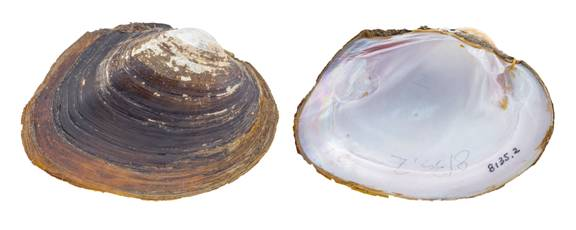

Cyrtonaias tampicoensis (Lea, 1838)
Tampico Pearlymussel

Cyrtonaias tampicoensis – Rio Grande [Rio Grande drainage], length 80.0 mm, TAMU-NRI 8135.
Identification
Shell structure: moderately thin to thick, somewhat compressed to inflated.
Shell outline: oval to subrhomboid.
Posterior ridge: somewhat high, broadly rounded, occasionally biangulate.
Shell color: yellowish-brown or -green in smaller individuals becoming dark brown or black in larger individuals.
Rays: may have green indistinct rays in smaller individuals; surface dull to glossy.
Shell texture: smooth.
Umbo: low to high, broad, elevated above the hinge line; umbo cavity deep.
Umbo sculpture: occasionally fine ridges but usually lacking.
Pseudocardinal teeth: somewhat large, moderately thick, can be compressed, triangular, roughened, 2 divergent teeth in left valve, 1 in right valve.
Lateral teeth: long, somewhat thick, straight to slightly curved, slightly serrated, 2 in left valve, 1 in right valve.
Interdentum: moderately long and wide.
Nacre: purple, pink, orange, white or bicolored.
Other: reported to show sexual dimorphism, but this has not been confirmed.
General distribution
Central Texas south to Vera Cruz, Mexico, along the Gulf Coastal Plain.
Habitat
Streams, but not headwaters, to rivers, oxbows, reservoirs, and canals. In riverine habitats, found along banks and in backwater pools and oxbows. Typically occurs in still to moderate current in sand and mud substrates. Occasionally found in bedrock ledges, horizontal cracks in bedrock slabs, macrophyte beds and roots of trees and vegetation along steep banks.
Legal listing status
USFWS: None